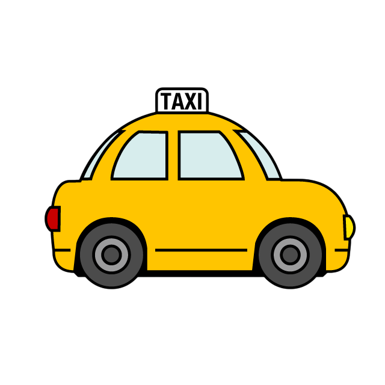
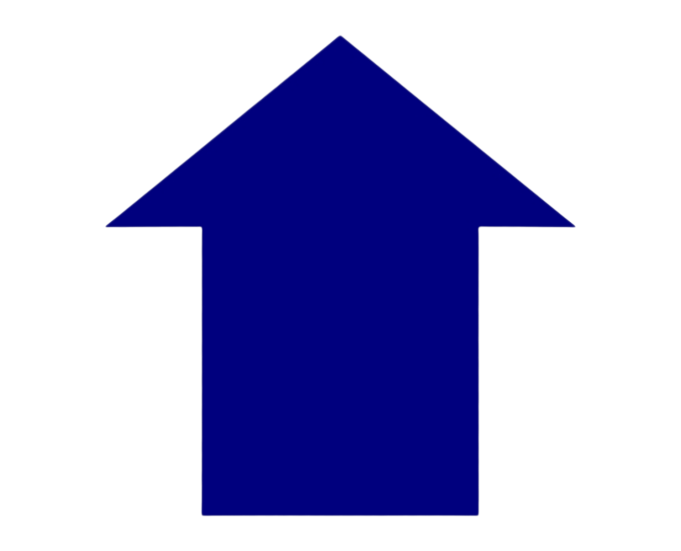
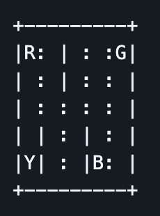
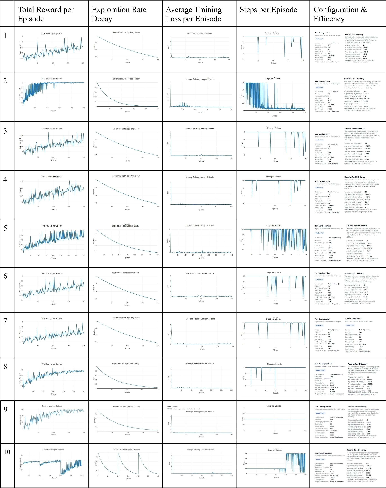
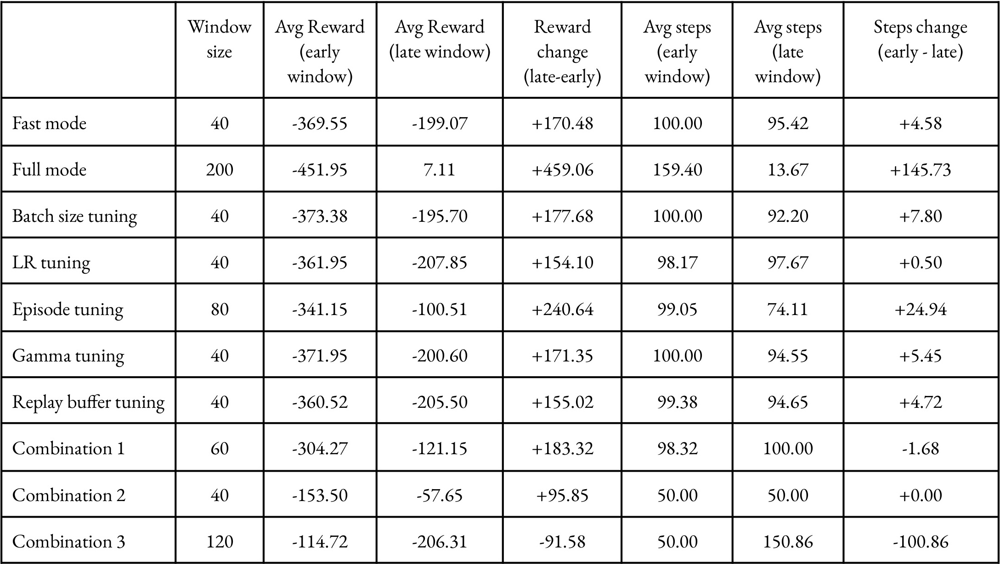

3 years ago, if someone asked me if I believe that unmanned vehicles would be running in the street along with normal cars I would have probably have a really confused face. I believe anyone would at that point. However we are living in an age where Waymo and Nvidia are leading competitors in their own fields. Learning about technology in todays world is fascinating to me hence, why for my Neural Networks course I decided to investigate how an agent used in Reinforcement Learning functions.

An agent, in Reinforcement Learning, is an actor who interacts with its environment. In the case of what I did for this research I worked with the famous Taxi-v3 gymnasium that navigates passengers through a grid like world. The agent attempts to drop off passengers through trial and error from its pick up destination all the way to its drop off destination.
Emulating a real world taxi drop off, seen as with uber, lyft, etc. Training a computer agent to optimally try to navigate the world, given 500 states of where a passenger could be picked up from and/or dropped off sucessfully or non-sucessfully. Once the passenger is dropped off an episode ends.
Contains six directions/actions the agent can move/take.

1: Move north (upwards)Given to an agent will incentivice to take that action or penalize them for that action.
Starting state: agent starts in a random state.

Computer agent roams this map like 5x5 grid world environment.
Is a space where an agent can achieve 500 discrete states. Given that there are 25 taxi positions, 5 passenger locations, and 4 destination locations in the environment. (i.e. combination of action and observation space).
The corresponding state can be calculated using this formula: ((taxi_row * 5 + taxi_col) * 5 + passenger_location * 4 + destination)
Passenger locations:
Drop-off locations:
Conducted hyperparameter tuning (tested many combinations), investigated number of episodes (up to 1,000) effect and speed (FAST/NON-FAST) effect on agent. Also tested non-context agent approach vs memory based policy driven agent (that follows correct paths given a JSON file of past correct paths taken).

In this instance, my teammate and I ran a series of 10 trials where we evaluated the agent's performance. Exploring total reward per episode, exploration rate leading to exploitation, training loss per episode, steps per episode, and configuration and efficiency metrics. The most optimal performance was seen with a greater number of episodes such as 1,000 episodes. Additionally giving context to an agent helped reduce the number of mistakes, training loss was even more minimized, and steps were unstable given the context it had.

In this table, metrics used during our investigation on the agent are noted here.
When working with the agent, an intial challenge was getting my pycharm set up. I needed a savedModel approach for the Tensorflow version I was using of 2.15, since it had compatibility issues with .h5 models which were what we intially had. One of us had to used a savedModel approach.
Another challenge was us limiting the number of episodes we would apply to our trials since time was limited and training the agent could take up to 5+ hours. So we were trying to be efficient while still testing out different parameters as best as we could within our time constraint.
In this project I not only learned about how fun it is to work in a team in this really interesting project, but also how important time management with Neural Networks can be. I also learned the important of file compatibility, and even was able to learn more about how an agent interacts with its environment through all these test runs.
Furthermore, it was really intersting to see theory turn into practice. Since previously the professor had explained an agent interacting with its environemnt, but during the project is when I actually got to see how a policy actually works. And also how an agent makes its own decisions.
Through this project, I was able to see how many of the contents I have studied and done other projects of all come along with this one usage of Machine Learning. Through Reinforcement Learning we see the agent using both labeled and unlabeled data when interacting with its environemnt and seeing whether or not the path it took is correct. Through the rewards and penalties given to it. Additionally behind all this logistic is the key factor of statistics and bayes probability of what the agent will take and even Markov Decision Process components of states by storing past transition states when I implemented a replay buffer(stores context of what the agent had done prior).
Additionally, i was able to see that an agent needs to be finetuned in order to work properly. A policy just servers for us as programmers to see what decisions the agent came to but it cannot be put into action. We can only provide the agent some context by giving it a replay buffer, and also by rewarding and penalizing it. I was able to see the importance of training an agent for thousands of hours to achieve perhaps a near 80% accuracy, but also how essential it is to learn more efficenient ways to train an agent.
In the future I hope to keep exploring reinforcement learning through other projects. And potentially make one agent train another agent with certain parameters that it has seen as highly sucessful.
Credits to my project partner for this RL project report Sam Mui Tsan.